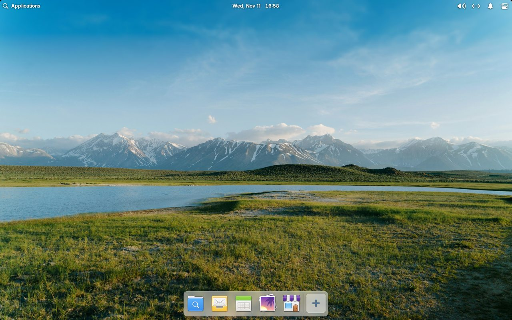

The Pantheon desktop, rebuilt on Fedora.
elementary’s Wayland desktop on Fedora’s kernel and installer, with Windows apps handled by preinstalled Wine — and a recovery session ready when things go wrong.

Overview
The whole desktop, as shipped.
One live session, exactly what an installed system runs — Wingpanel, the dock, and the apps behind them, on Wayland. Nothing staged for the website.
Inside
What’s inside.
.exe and .msi files open straight from the desktop, backed by a shared per-user prefix.